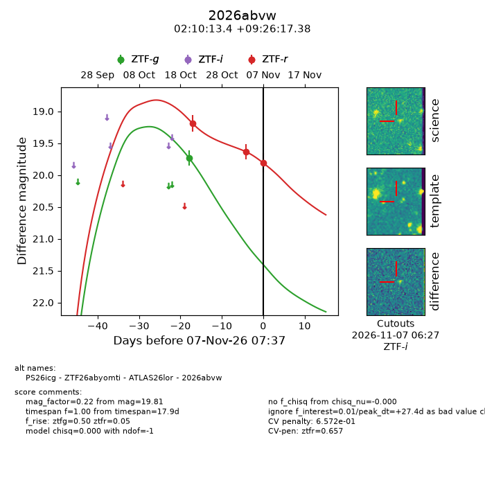
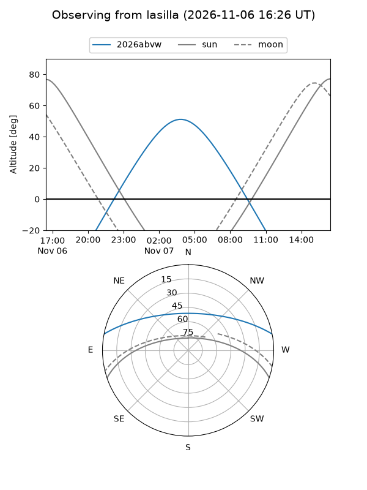
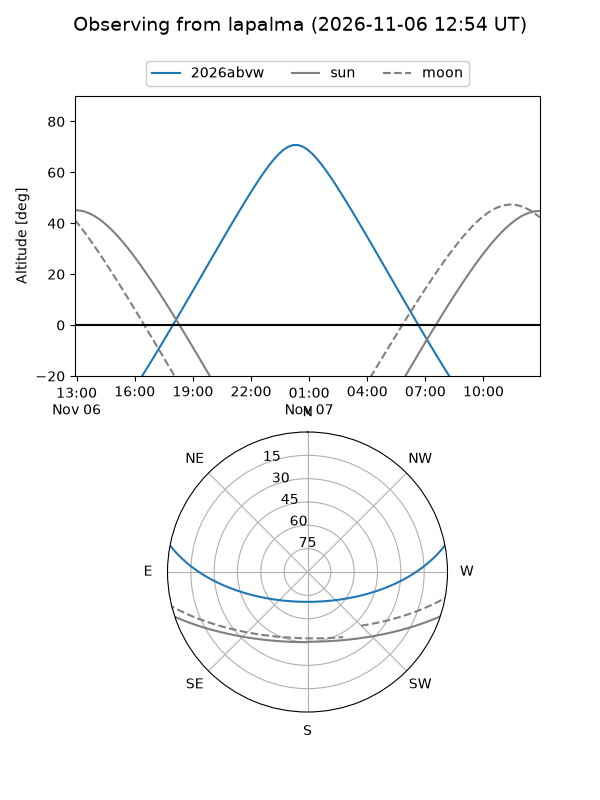
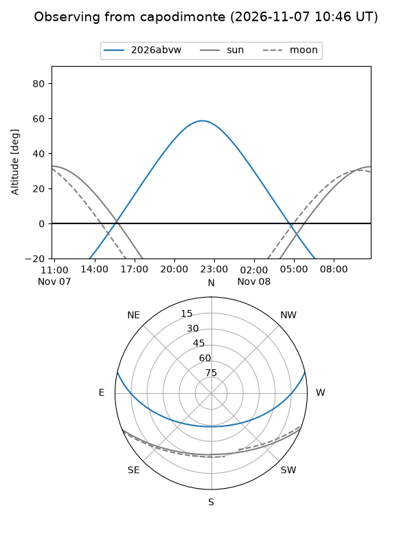
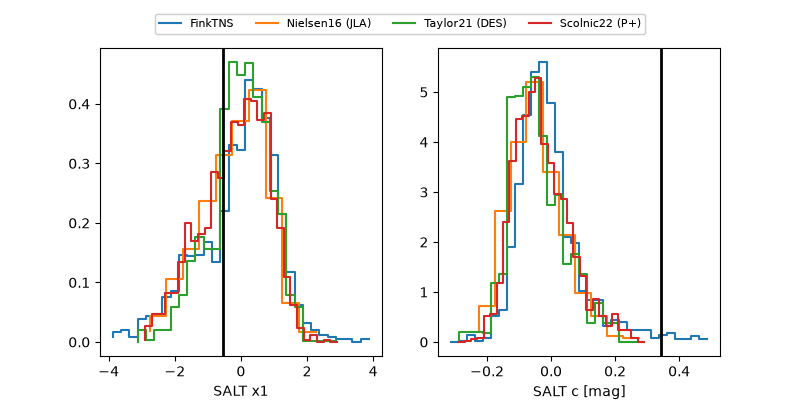

2026abvw
Target 2026abvw at 2026-11-07 07:39
Aliases and brokers:
FINK-ZTF: ztf.fink-portal.org/ZTF26abyomti
Lasair-ZTF: lasair-ztf.lsst.ac.uk/objects/ZTF26abyomti
ALeRCE-ZTF: alerce.online/object/ZTF26abyomti
YSE-PZ: ziggy.ucolick.org/yse/transient_detail/2026abvw
TNS name: wis-tns.org/object/2026abvw
Direct TNS query: direct search
alt names
ZTF26abyomti (ztf,fink_ztf)
2026abvw (tns,yse)
ATLAS26lor (atlas)
PS26icg (panstarrs)
Coordinates:
equatorial (ra, dec) = 32.5558,+9.43816
equatorial (HMS+DMS) = 02:10:13.39,+09:26:17.38
galactic (l, b) = (153.2110,-48.74658)
Flags:
likely cv: !!
CV pen: 0.6572333197946774
peak dt: +27.4
Photometry:
last ztfg=19.73, ztfr=19.81
1 ztfg, 3 ztfr detections
Lightcurve

Visibility



Additional plots
